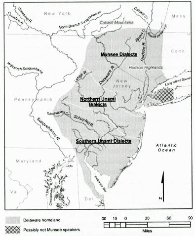
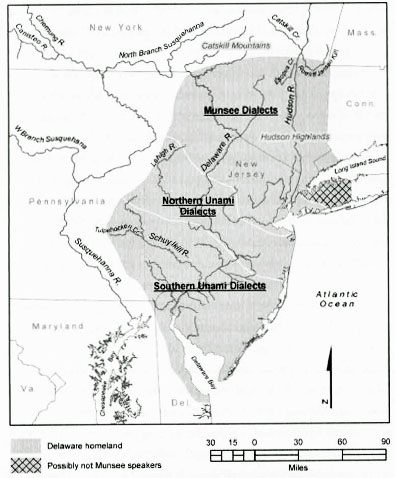

physical network trace
first stop: origin-computer

40.713192, -74.006065
(new york-ny)
The coordinates are right by the Tweed Courthouse in City Hall Park. 1998 to August 1999 the area was
excavated as the land City Hall Park forms is part of the African Burial Ground and Historic Commons
Historic District. The result of the eight-month-long project was the identification of fifty-one (51)
features consisting of twenty-five (25) trash pits and twenty-six (26) architectural features, and the
recovery of more than an estimated two hundred fifty thousand (250,000) artifacts and faunal remains.
In 2001, CUNY reached an agreement with Parks to conduct the cataloguing, stabilization and analysis
of the artifacts. (archaeology.cityofnewyork.us)
"Investigations revealed that during the 17th and 18th centuries, free and enslaved Africans were
buried in a 6.6 acre burial ground in lower Manhattan outside the boundaries of the settlement of
New Amsterdam, which would become New York." (GSA.gov)
City Hall Park occupies Munsee Lenape land, one of three Lenape sub tribes. A fraudulent treaty known
as the Walking Purchase resulted in the forced removal of the Munsee, moving from the Delaware River
to the Susquehanna River.
 
